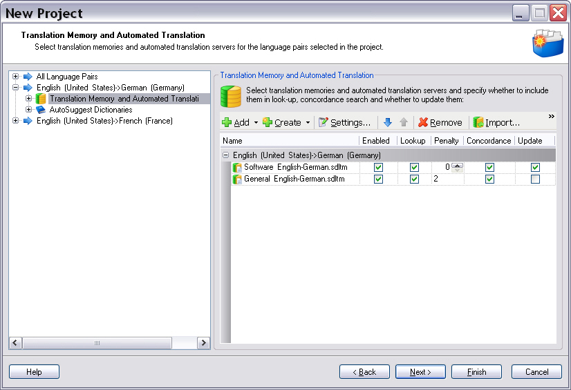

Project Configuration
This section describes what is included in the configuration of a project and explains how project templates can help with management of configuration information.
Project Configuration
Some configuration is required in order to process a localization project. Various parts of the system, be it automatic tasks or manual tasks, can be configured to work in various ways depending on the type of input files, the customer for whom the project is done, the languages or other factors. We refer to this as the Project Configuration.
The project configuration consists of the following:
- Project settings)
- Language directions
- For every language direction:
- File type configuration
- Language resources
- Termbases
- Analysis bands
- Workflow
A project configuration is represented by the IProjectConfiguration interface in the object model.
Project Settings
The project settings are settings that are defined for the project as a whole. They use the standard settings mechanism. The project settings can be overridden for individual language directions (see Language direction specific settings).
By default, a number of settings groups are provided to configure some standard tasks in the system:
- Translation Memory Settings: Settings applicable to all uses of translation memories within the project, for instance minimum match value and various translation memory match value penalties. See TranslationMemorySettings.
- Analysis Task Settings: Settings for the automatic Analysis task, which computes translation memory leverage analysis statistics. See AnalysisTaskSettings.
- Project Translation Memory Task Settings: Settings for the automatic Create/Update Project Translation Memory task. See ProjectTranslationMemoryTaskSettings.
- Pre-translate Task Settings: Settings for the automatic Pre-translate task, which applies translation memory matches to translatable files. See TranslateTaskSettings.
- Word Count Settings: Settings for the word count task, which counts the total number of words in files. See WordCountSettings.
- Translation Count Settings: Settings for the calculate translation progress task, which computes confirmation statistics. See TranslationCountSettings.
- Translation Memory Update Task Settings: Settings for the update project and main translation memory tasks. See TranslationMemoryUpdateTaskSettings.
- Export Files Settings: Settings for the export files task, which exports various versions of project files to a specified location. See ExportFilesSettings.
The generic nature of the settings mechanism makes it a natural way for custom components or tasks to store custom project-level settings.
Most of these settings can be overridden on a language direction level, that is if the particular settings makes sense in a target language context and if the particular components consuming the settings expect this to happen. See Language direction specific settings.
Language Directions
The project configuration contains a number of language directions (= source-target language combinations), which determine from which source language into which target languages the files should be translated.
A language direction is represented by the ILanguageDirection interface in the object model.
Translation Providers
Every language direction has the ability to contain a list of translation providers. A translation provider is an abstract concept of an engine or data source that can provide translations or translation suggestions for a segment and optionally has concordance search capabilities. The following types of translation providers are currently supported:
- Translation Memory (file- or server-based): the RWS translation memory engine.
- Automated Translation Server: provides automated or machine translation functionality, based on RWS's ETS engine, Google Translate, etc.
- Any other custom-developed translation provider plug-in, e.g. a plug-in that retrieves translation solutions from a tab-delimited list Note that the translation provider mechanism is pluggable, which means third-parties can develop support for additional translation provider types, such as for instance the Google machine translation engine, or a third-party translation memory implementation. How to develop a translation provider plug-in is outside the scope of this help system.
Translation providers are used in various scenarios during the project lifetime, for instance during project preparation to analyze leverage and automatically apply translations to some or all segments in the project files. Translation providers are also used interactively while the user is manually translating documents, in order to give translation matches and provide concordance search functionality. Newly created translations can also be added to translation providers (mainly to translation memories), either automatically by the system or manually by the user. In order to make sure that only the relevant, reviewed translations end up in the translation memories, project translation memories are generally used. Project TMs serve as a working translation memories that exist only during the lifetime of the project. For more information on these topics, see About Project Translation Memories.
AutoSuggest Dictionaries
Every language direction can also be associated with one or more AutoSuggest dictionaries. An AutoSuggest dictionary is a bilingual phrase dictionary, which is used by the Trados Studio editing environment to provide translation suggestions for phrases or partial segments as the user types. AutoSuggest dictionaries are typically generated by performing statistical analysis of large translation memories. Currently, only file-based AutoSuggest dictionaries are support, but in the future one can imagine a server-based version becoming available.
An AutoSuggest dictionary is represented by the IAutoSuggestDictionary interface in the object model.
Language-specific Settings
The user can override individual project settings for a specific language direction. For instance, if the project-level minimum translation memory match value is 80%, this can be overridden for a specific language direction to be 90%. All other language directions still inherit the project-level value. Also, all other settings for this language direction, except for the minimum match value, will still be inherited from the project settings.
File Type Configuration
The project configuration contains an ordered list of file types available for the project. A file type, sometimes called file type definition, is essentially a collection of settings that influence various aspects of processing translatable files, such as extracting translatable content, preview, special characters and tags that be used while editing the file, etc. The File Type Support Framework provides a mechanism for automatically selecting a matching file type for a given file, but it is possible that for a given file, there are multiple matching file types. By only including certain file types in the project, and by prioritizing these (the first matching file type in the list will be used), the user can get a certain level of control over which file type will be used for processing the files in a project.
Language Resources
"Language Resources"" is an umbrella term for settings that affect language-specific processing. The main example of this in use currently is segmentation and tokenization. The following types of language resources are currently available:
- Segmentation rules: These rules determine how translatable content is split into segments, which represent the smallest piece of content that can be translated as a unit. The rules are obviously language specific.
- Abbreviations: There is list of abbreviations for every language, which is for instance used in the segmentation process in order to determine whether to split the content on a full stop character (should not happen if this is the full stop that follows a well-known abbreviation).
- Ordinal Followers: This is a set of characters that can follow ordinals, i.e. numbered lists and should for that reason not be seen as a reason for segmenting the content at that point.
- Variables: These are user-defined pieces of text which should be considered as a unit and that are not translatable. For TM matching purposes, variables are considered to be interchangeable and can be transferred as is into the target segment, much like tags. An example of these could be product names. Since the main use case of language resources lies in translation memory processing, the translation memory itself can store language resources. As a consequence, the main use cases is that the language resources stored in the translation memory are used for translation memory processing, but also for things like calculating word counts.
There are, however, cases in which you cannot use the language resources that are stored in translation memory, because you simply have not selected any translation memories for a certain language direction. This is where the project language resources come into play: they provide fallback language resources in case no translation memory has been specified for a certain language direction. If there is a translation memory, that translation memory's language resources will always be used. If there is neither a translation memory or project language resources, the default language resources are used, which is a set of built-in, static language resources that is available on every installation.
Note that language resources are specified on the project level, rather than the language direction level. This is because the language resources for all languages are typically managed as one unit, for instance in a language resources file or a language resources template on the server.
For more information about language resources, please refer to the Translation Memory API documentation.
Termbases
The project can also optionally contain references to one or more termbases that should be used during translation to identify and translate well-known terminology. One of the termbases in the list should be marked as the default termbase. The default termbase is always to termbase that will be searched for matches first. Part of the termbase configuration is also a mapping from project language to termbase indexes, to make sure that the appropriate indexes are used for searching for terminology in the various project languages. For every termbase, a filter can be specified as well; this determines the content of the termbase that should searched within the context of this project.
Termbases can either be file-based or server-based. MultiTerm imposes the limitation that when links to server-based termbases are included in a project, they all have to reside on the same termbase server, since it cannot perform cross-server termbase searches.
Analysis Bands
Analysis bands are the categories in which word, segment and character count statistics are calculated during translation memory analysis as part of project preparation. During that analysis, a translation memory lookup is performed for every segment in a translatable file. The best match returned by the translation memory is then categorized according to the analysis bands. The default categories are:
- Context match: A 100% match, for which the context (preceding segment) matches the current context in the document.
- Exact match: A 100% match.
- 95-99% fuzzy match
- 85-94% fuzzy match
- 75-84% fuzzy match
- 50-74% fuzzy match
- No match (new): no translation memory match available higher than 49%
- Repetition: repeated segments for which no match is available.
All of the above categories are fixed, expect for the fuzzy analysis bands. The fuzzy analysis bands in the example are the defaults, but certain customer have a requirement to change them, which is why they can be specified in the context of a project.
Workflow
Part of the project configuration are also the types of manual, automatic and complex tasks that can be performed within that project. These are referred to as the workflow. Apart from the available tasks, the workflow also specifies a single complex task which will be executed when the project is started. All other tasks are available after that and can be executed by the user as and when required. For more information on tasks, see About tasks.
Project Templates
It would be obviously tedious to have to set up the entire configuration for every single project. For that reason, the Project Automation API implements the concept of project templates, which constitute named project configurations from which projects can be created quickly. When creating a project based on a project template, the project configuration information stored within that project is copied into the project itself. There is no live link between a project and the project template it was created from, i.e. making changes to one will not affect the other.

The screenshot above illustrates how main translation memories are selected in the New Project wizard of Trados Studio.
See Also
Setting the Project Information
Automatic Tasks and Tasks Settings
Creating Projects based on Templates